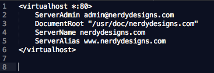

Web servers can support multiple Web sites. In a Apache configuration, each identity, including the main one is known as a virtual host. In order to have your single system support multiple web sites, you must configure Apache appropriately. In order to do that, you must know somethings about your system such as your ip address that is assigned to it.
Here is a screenshot of how to create a virtual host.
The first line allows you to create a virtual host on your server, the * is used for the ip address and the 80 is for the port number. The server admin is your email address and allows error logs to be emailed to you. The document root is where the files are stored on your machine. Server name allows you to name your server. Server aliases allow you to have several aliases for your server. And that is a quick tutorial on how virtual hosts work.